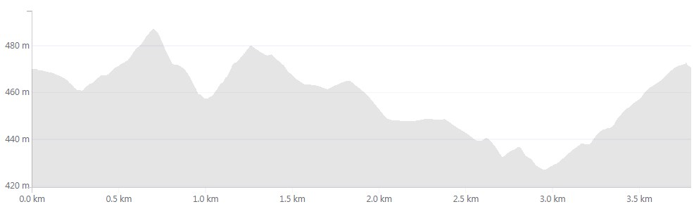

O Přeborníka Boudy
Nejmladší monument. Svátek amatérského běhání. Trať hlavního závodu měří 3,9 km a vede srdcem krásné krajiny pod vrcholem ikonické hory Žulák.
Video hlavní trasy
Cíl závodu je v čase 9:23, zbytek videa je cesta k Boudě.
Profil trati
